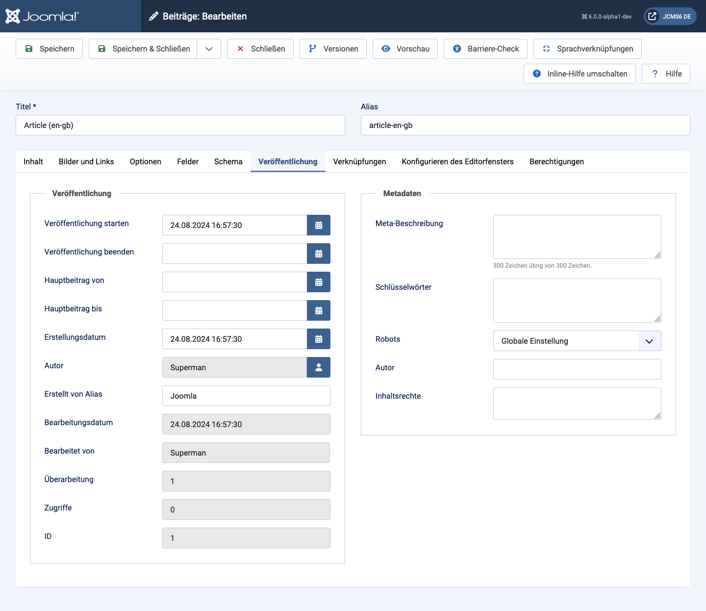

Viele Komponenten ermöglichen die Angabe von Veröffentlichungsdatumsoptionen für jedes Element, normalerweise wann die Veröffentlichung gestartet oder beendet werden soll. Artikel, Banner, Kontakte und vielleicht mehr haben einen Veröffentlichungs-Tab.
Elementmetadaten sind auch auf der Registerkarte Veröffentlichen enthalten. Dies hat Vorrang vor Metadaten in Menüs oder in der globalen Konfiguration. Es ist wichtig, die Metadatenbeschreibung zu vervollständigen, da Ihre Site sonst möglicherweise viele Seiten mit derselben Beschreibung enthält. Dies könnte sich nachteilig auf die SEO auswirken.
Beispiel
Die Registerkarte Artikel veröffentlichen:

Die meisten Formularfelder haben Standardwerte, mit denen das Element gespeichert werden kann. Möglicherweise möchten Sie für die folgenden Bereiche geeignete Maßnahmen ergreifen:
Meta Description Es liegt in Ihrem eigenen Interesse, den Inhalt dieses Artikels in weniger als 64 Zeichen zu beschreiben.
Schlüsselwörter Eine Funktion von Webseiten, die vor Jahren von Suchmaschinen aufgegeben wurden. Lassen Sie das Feld leer, es sei denn, Sie haben eine bestimmte Anwendung, die sie verwendet.
Veröffentlichungs-Panel
Veröffentlichung starten Datum und Uhrzeit des Veröffentlichungsbeginns. Geben Sie den Artikel im Voraus ein und lassen Sie ihn zu einem späteren Zeitpunkt automatisch veröffentlichen.
Veröffentlichung beenden Datum und Uhrzeit der Veröffentlichung. Der Artikel wird zu einem späteren Zeitpunkt automatisch in den unveröffentlichten Status geändert.
Start Featured Datum und Uhrzeit zum Starten des Status Featured. Geben Sie den Artikel im Voraus ein und lassen Sie ihn zu einem späteren Zeitpunkt automatisch anzeigen.
Featured beenden Datum und Uhrzeit zum Beenden des Featured Status. Der Artikel wird zu einem späteren Zeitpunkt automatisch in den Status Unbesetzt geändert.
Erstellungsdatum Die aktuelle Uhrzeit, zu der der Artikel erstellt wurde. Geben Sie ein anderes Datum und eine andere Uhrzeit ein oder klicken Sie auf das Kalendersymbol, um das gewünschte Datum zu finden.
Erstellt von Name des Benutzers, der diesen Artikel erstellt hat. Dies wird standardmäßig auf den aktuell angemeldeten Benutzer angewendet. Wenn Sie dies in einen anderen Benutzer ändern möchten, klicken Sie auf die Schaltfläche Benutzer auswählen.
Erstellt von Alias Geben Sie einen Alias für den Autor dieses Artikels ein. Dadurch können Sie einen anderen Autorennamen anzeigen.
Änderungsdatum Datum der letzten Änderung.
Geändert von Benutzername, der die letzte Änderung vorgenommen hat.
Überarbeitung Anzahl der Überarbeitungen dieses Artikels.
Treffer Die Anzahl der Male, die dieser Artikel angesehen wurde.
ID Eine eindeutige Identifikationsnummer für diesen Artikel, Sie können diese Nummer nicht ändern. Beim Anlegen eines neuen Artikels zeigt dieses Feld "0" an, bis Sie den neuen Eintrag speichern.
Metadatenfenster
Meta-Beschreibung Ein Absatz, der als Beschreibung der Seite verwendet werden soll.
Schlüsselwörter Eintrag für Schlüsselwörter.
Roboter Die Anweisungen für Web-Roboter, die zu dieser Seite navigieren. Setzen Sie 'Global verwenden' in der globalen Konfiguration.
Autor Eintrag für einen Autorennamen innerhalb der Metadaten.
Inhaltsrechte Beschreiben Sie, welche Rechte andere haben, um diesen Inhalt zu verwenden.